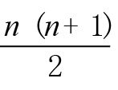
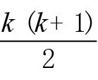
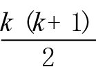
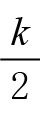
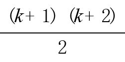
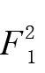
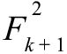
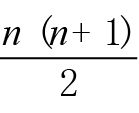
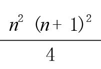
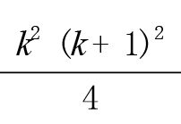

棋盘覆盖问题与归纳性证明
我们再回过头去，证明与正整数相关的一些定理。在本书第1章，通过观察：
我们先提出前n个奇数的和是n2的命题，然后着手证明这个命题。当时，我们使用的是巧妙的“组合性证明”（combinatorial proof）法，即通过两种方法统计棋盘的方格数，证明了这个命题的真实性。接下来，我们用一种无须巧妙构思的方法来证明这个命题。假设我告诉你（也许你本就深信不疑）前10个奇数的和1 + 3 + … + 19是102，即100，如果你表示同意，那么再加上第11个奇数（21），和毫无疑问是121，也就是112。换句话说，如果针对前10个奇数该命题为真，那么针对前11个奇数该命题同样为真。这就是“归纳证性明”（proof by induction）法的指导思想。在涉及n的证明时，我们通常会先证明命题在一开始的时候（通常是n = 1时）是正确的，然后证明如果n = k时命题成立，那么n = k + 1时它也成立。由此可证，在n取所有值时命题都成立。归纳性证明就像爬梯子：先证明你可以踏上梯子，然后证明如果你已经爬上了一级，就可以再向上爬一级。稍稍思考其中的道理，你就会相信自己可以爬上梯子的任意一级。
例如，对于前n个奇数的和这个命题，我们的目标是证明对于所有的n≥1，都有：
1 + 3 + 5 + … + (2n – 1) = n2
我们发现，第一个奇数1的和的确是12，因此当n = 1时，这个命题肯定是正确的。接下来，我们注意到，如果前k个奇数的和是k2，即：
1 + 3 + 5 + … + (2k – 1) = k2
再加上下一个奇数（2k + 1），就有：
1 + 3 + 5 + … + (2k – 1) + (2k + 1) = k2 + (2k + 1)
= (k + 1)2
也就是说，如果前k个奇数的和是k2，那么前k + 1个奇数的和一定是(k + 1)2。既然n = 1时命题成立，由上述证明过程可知，n取所有值时该命题也成立。
归纳性证明法是一个功能强大的证明方法。本书讨论的第一个问题是前n个数字的和：
1 + 2 + 3 + … + n =

当n = 1时，该命题肯定是正确的，因为1 = （1×2） / 2。如果我们假设对于某个数字k，命题
1 + 2 + 3 + … + k =

是正确的，在上式基础上再加上 (k + 1)，就会得到：
1 + 2 + 3 + … + k + (k + 1) =

+ (k + 1)
= (k + 1) (

+ 1)
=

这是用 k + 1代替n时的求和公式。因此，如果n = k（k是任意正数）时公式成立，那么当n = k + 1时，该公式同样成立。由此可证，当n取所有正值时，公式都成立。
在本章以及后续章节中，我们将见到更多的归纳性证明实例。为了帮助大家加深印象，我在这里为大家送上“数学音乐家”戴恩·坎普（Dane Camp）和拉里·莱塞（Larry Lesser）创作的一首歌，这首歌采用了美国民谣歌手鲍勃·迪伦（Bob Dylan）的作品《答案在风中飘荡》（Blowing in the Wind）的旋律。
如何才能证明n取所有值时
命题都成立？
既然无法一一验证
盲目尝试又有何益！
面临如此困境，
能否找到锦囊妙计？
答案啊，我的朋友，是要学会归纳性证明，
答案是要学会归纳性证明！
首先研究开始时的情况
证明命题没有问题，
然后假设n = k时命题为真
并证明n = k + 1时仍然成立！
至此问题迎刃而解
告诉我你是否感到满意？
既然已经说了n次，说n + 1次又何妨
答案是要学会归纳性证明！
延伸阅读
我们在本书第5章讨论了斐波那契数列数字间的几种相互关系。下面，我们就用归纳性证明法验证其中几个等式。
定理：对于n≥1，
F1 + F2 + … + Fn = Fn+2–1
证明：当n = 1时，上式为 F1 = F3–1，即1 = 2–1，这显然是成立的。假设当n = k时，命题也成立，那么：
F1 + F2 + … + Fk = Fk+2–1
在等式两边同时加上下一个数字Fk+1，就会得到
F1 + F2 + … + Fk + Fk+1 = Fk+1 + Fk+2 – 1
= Fk+3 – 1
证明完毕。 □
斐波那契数列的平方和等式的证明同样简单。
定理：对于n≥1，
证明：当n = 1时，上式为
= F1 F2，这显然是成立的，因为F2 = F1 =1。假设当n = k时定理也成立，那么：
在等式两边同时加上

，就会得到：
证明完毕。 □
我们在本书第1章发现，“三次方的和就是和的二次方”，例如：
13 = 12
13 + 23 = (1 + 2)2
13 + 23 + 33 = (1 + 2 + 3)2
13 + 23 + 33 + 43 = (1 + 2 + 3 + 4)2
但是，我们当时无法证明。有了归纳性证明法之后，就可以轻松完成证明工作了。这个一般性规律是：对于n ≥1，
13 + 23 + 33 + … + n3 = (1 + 2 + 3 + … + n)2
由于我们已经知道1 + 2 + … + n =

，因此我们可以证明下面这条等价定理。
定理：对于n≥1，
13 + 23 + 33 + … + n3 =

证明：当n = 1时，命题13 = (12×22) /4成立。如果n = k时定理也成立，就有：
13 + 23 + 33 + … + k3 =

两边同时加上 (k + 1)3，就会得到：
证明完毕。 □
延伸阅读
下面是立方和公式的几何证明。
我们用两种方法计算上图的面积，然后进行比较。一方面，这是一个正方形，它的边长是1 + 2 + 3 + 4 + 5，因此它的面积是 (1 + 2 + 3 + 4 + 5)2。
另一方面，我们从左上角开始，沿对角线方向观察，就会发现这个正方形是由1个1×1的正方形，2个2×2的正方形（其中一个正方形被分割成两半），3个3×3的正方形，4个4×4的正方形（其中一个正方形被分割成两半）和5个5×5的正方形构成的，因此它的面积等于：
(1×12) + (2×22) + (3×32) + (4×42) + (5×52)
= 13 + 23 + 33 + 43 + 53
由于计算的面积相等，所以：
13 + 23 + 33 + 43 + 53 = (1 + 2 + 3 + 4 + 5)2
利用相同的方法可以画出边长为1 + 2 + … + n的正方形，并证明下面这个等式成立：
13 + 23 + 33 + … + n3 = (1 + 2 + 3 + … + n)2 
归纳性证明法不仅限于证明求和问题。只要我们可以用“较小”问题（n = k时）的答案来推导出“较大”问题（n = k + 1时）的答案，归纳性证明法往往就有用武之地。下面向大家介绍一个让我深感满意的归纳性证明实例。问题与本章开头讨论的棋盘覆盖问题有关，但不是证明不可能性，而是证明某种可能性。而且，我们使用的不是双方块，而是L形的三方块。
因为64不是3的倍数，全部使用三方块的话是无法覆盖8×8棋盘的。但是，如果在棋盘上放一个1×1方块，那么无论这个1×1方块放在棋盘的什么位置，我们都可以用三方块覆盖棋盘的剩余面积。而且，这个命题不仅在棋盘的规格是8×8时为真，对于2×2、4×4、16×16的棋盘，该命题同样成立。
定理：对于所有的n≥1，都可以用三方块和一个1×1方块完全覆盖规格为2n×2n的棋盘，而且1×1方块可以放置在棋盘的任何位置上。
证明：当n = 1时，定理成立，因为任何一个2×2的棋盘都可以用一个三方块和一个1×1方块来覆盖，而且1×1方块可以摆放在棋盘的任何位置上。接下来，假设当n = k时（即棋盘大小为2k×2k时）定理也成立。我们需要完成的任务是证明在棋盘大小为2k+1×2k+1时，该定理仍然成立。如下图所示，将1×1方块摆放在棋盘的任意位置上，然后将棋盘分成四等分。
由于放有1×1方块的那一等分的大小为2k×2k，因此，它可以被三方块完全覆盖（根据假设，当n = k时，定理成立）。接下来，我们在棋盘的中心位置放一个三方块，让它与其余三个等分相交。这三个等分的大小分别为2k×2k，且其中有一个1×1方格已经被覆盖了，所以用三方块可以完全覆盖住它们。因此，在棋盘大小为2k+1×2k+1时，定理仍然成立。
本节最后证明的等式有很多重要应用，我们将用归纳证明法和其他几种不同方法予以证明。这个令人感兴趣的问题是：如果从20 = 1开始，将2的前n次方相加，和是多少？下面是排在前几位的2的幂次方：
1，2，4，8，16，32，64，128，256，512，1 024…
将它们加到一起，就会得到：
大家看出其中的规律了吗？所有的和都比2的更高次幂小1。
定理：对于n≥1，
1 + 2 + 4 + 8 +… + 2n–1 = 2n – 1
证明：如上所述，当n = 1时（以及n = 2，3，4或5时）定理成立。假设当n = k时定理成立，就有：
1 + 2 + 4 + 8 +… + 2k–1 = 2k–1
在等式两边同时加上更高一阶的2次幂，即2k，就会得到：
1 + 2 + 4 + 8 +… + 2k–1 + 2k = (2k – 1) + 2k
= 2×2k–1
= 2k+1–1 □
在第4章和第5章，我们通过运用不同方法回答同一个计数问题，证明了多种相互关系。看了下面的内容，你也许会认为组合性证明法真的非常重要！
问题：从n名曲棍球球员（球衣号码为1~n）中选择若干名球员加入体育联合会代表团，要求代表团中至少包含1名球员，一共有多少种选择方案？
第一种解法：每名球员都有参加或者不参加代表团这两个选择，因此选择方案应该是2n种。但所有球员均不参加的情况是不允许的，还需要减去1。所以，一共有2n–1种选择方案。
第二种解法：考虑参加者的球衣号码最大的情况。如果1是最大号码，选择方案只有1种；如果2是最大号码，选择方案有2种（2号球员可能独自参加，也可能和1号球员一起参加）；3是最大号码时，选择方案有4种（3号球员必须参加，1号和2号球员各有两个选择）。以此类推，n是最大球衣号码时，选择方案有2n–1种，因为n号球员必须参加，1号至n – 1号球员各有两个选择（参加和不参加）。加到一起，一共有1 + 2 + 4 + … + 2n–1种选择方案。
由于这两种解法都是正确的，因此必然会得出相同的答案。也就是说，1 + 2 + 4 + … + 2n–1 = 2n – 1。
不过，最简单的证明方法可能是单纯的代数运算，这让我们不禁回想起把循环小数表示成分数形式的那个方法。
代数证明：
令S = 1 + 2 + 4 + 8 + … + 2n–1
两边同时乘以2，就会得到：
2S = 2 + 4 + 8 + … + 2n–1 + 2n
用第二个等式减去第一个等式，除了第一个等式的第一项和第二个等式的最后一项外，其余各项都被消掉了，因此：
S = 2S–S = 2n – 1 □
我们刚刚证明的定理其实是二进制表示方法的关键内容。二进制表示方法非常重要，计算机就是利用它来存储和处理数字的。二进制表示方法的理论依据是，所有数字都可以表示成2的不同次幂相加的唯一形式。例如：
83 = 64 + 16 + 2 + 1
在把十进制转化成二进制时，每个2的幂次方用数字1表示，缺位的幂次方用数字0表示。在这个例子中，83 = (1×64) + (0×32) + (1×16) + (0×8) + (0×4) + (1×2) + (1×1)。因此，83的二进制表示就是：
83 = (1010011)2
我们怎么知道所有正数都可以这样表示呢？假设从1到99的所有数字都可以表示成2的不同次幂相加的唯一形式，我们怎么知道100是否可以表示成这种唯一形式呢？首先，我们在100以内找到2的最高次幂，这个数字应该是64。（64是必不可少的吗？是的，因为即使我们把1、2、4、8、16、32全部选上，它们的和也只有63。）选好64之后，我们还需要用2的不同次幂相加得到36，才能凑成100。根据假设，我们可以用2的不同次幂相加的唯一形式表示36，因此，100也必然有唯一的二进制表示。［我们怎么表示36呢？先找到2的最高次幂，然后得到36 = 32 + 4。因此，100 = 64 + 32 + 4的二进制表示就是 (1100100)2。］我们可以将这个过程推而广之，从而证明所有的正数都有唯一的二进制表示。